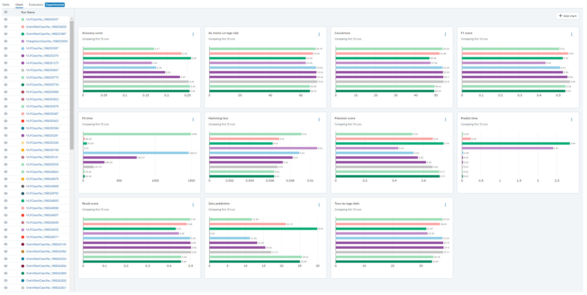

Introduction
Le but de ce projet est de concevoir un outil permettant de suggérer des mots-clés lors de la rédaction d'un message sur un forum.
Le travail sera basé sur un dataset constitué de 50 000 messages provenant du forum Stack Overflow.
Deux approches seront testées :
- Approche non supervisée avec LDA et NMF.
- Approche supervisée avec embeddings préalables.
Le projet a été réalisé dans un cadre MLOps et la plateforme MLflow a été utilisée.
Remarque : j'ai également réalisé un autre projet sur cette même thématique (suggestion de mots-clés) en testant deux nouvelles approches (KeyBERT et le LLM Mistral), plus de détails sur cette page.
Les objectifs du projet sont les suivants :
- Élaborer un modèle pour prédire des tags.
- Avoir une approche MLOps.
- Créer une API.
- Déployer cette API de manière continue.
- Obtention et préparation des données.
- Tests de différentes approches pour notre problématique.
- Création de l'API avec FastAPI.
- Déploiement continu de l'API sur Azure avec GitHub Actions.
Retrouvez tout le code de ce projet sur mon GitHub : travail d'élaboration et code de l'API
Obtention et préparation des données.
Il est possible de récupérer des messages et les tags qui y sont associés sur Stack Overflow de deux manières. Regardons les avantages et les inconvénients de ces deux méthodes :
Utilisation de la bibliothèque StackAPI :
Utilisation du Stack Data Exchange Explorer :
Puisque nous n'avons pas besoin de récupérer régulièrement des messages, la deuxième approche est la plus appropriée. Nous allons donc constituer notre dataset avec des messages présentant les caractéristiques suivantes :
Messages récupérés
Le choix de ces caractéristiques est important pour nous assurer de la bonne qualité des messages qui seront utilisés pour élaborer notre modèle.
Aucune donnée personnelle concernant les auteurs des messages n'est récupérée, afin d'éviter toute problématique liée au RGPD.
La requête SQL suivante a été utilisée afin de récupérer les 50 000 messages (et leur tags associés) de notre dataset :
SELECT TOP(50000) posts.id,
posts.creationdate,
title,
body,
tags,
users.reputation,
-- Réputation moyenne des users avec les critères actuels
(SELECT Avg(reputation)
FROM users) AS moyenne_reputation
FROM posts
-- Jointure pour récupérer la réputation des users
JOIN users
ON posts.owneruserid = users.id
WHERE posts.creationdate BETWEEN CONVERT(DATETIME, '2022-01-01') AND
CONVERT(DATETIME, '2023-12-31')
AND posts.score > 0 -- Questions avec un score positif
AND posts.answercount > 0 -- Au moins une réponse
AND posts.commentcount > 0 -- Au moins un commentaire
AND users.reputation >= 91 -- Soit la réputation moyenne sur cette période avec ces critères
Premier traitement
Combiner les titres avec les corps des messages, puis suppression des balises HTML et des portions de code.
Tailles des documents (caractères)
Nombre de tags associés aux documents

Ce premier traitement réalisé, nous allons effectuer deux autres traitements :
- Un traitement minimal : tokenisation, passage en minuscule et suppression de la ponctuation.
- Un traitement complet visant à simplifier au maximum les messages et réduire la taille du vocabulaire.
Nous conservons également les dates des messages, elles nous seront utiles plus tard pour évaluer le model drift.
Récapitulatif des traitements réalisés
Word cloud des documents avant les traitements
Word cloud des documents après traitements complets
Nos données sont désormais prêtes, nous allons pouvoir passer à notre première approche.
Approche non supervisée
Pour cette première approche non supervisée, nous allons tester deux modèles :
- LDA : Latent Dirichlet Allocation.
- NMF : Non-negative matrix factorization.
Deux types de représentations des mots seront testés
TF-IDF prend en considération la fréquence des mots.
Les modèles LDA et NMF commencent par parcourir le corpus (l'ensemble des documents) et génèrent des sujets. Chaque sujet peut ensuite être associé à chacun des documents. Ces sujets sont une suite de mots classés par ordre d'importance par rapport au sujet donné. Notons que les mots constituant les sujets proviennent tous du corpus de documents. À partir de là, pour générer des mots-clés pour chaque document, deux approches sont possibles :
- Approche 1 : conserver les premiers mots du sujet, par exemple les 5 premiers.
- Approche 2 : prendre une plage de mot plus étendue du sujet, par exemple 50, et ne conserver que ceux qui apparaissent aussi dans le document.
Ensemble des métriques que nous pouvons utiliser
Le score de cohérence est utilisé en amont, pour nous aider à définir un nombre optimal de sujets à générer avec LDA et NMF.
Pour ce projet, le but n'est pas de trouver exactement tous les mots-clés et aucun autre, mais simplement d'en proposer qui seraient pertinents pour le message. Nous allons nous concentrer ici sur les métriques métier.
Résultats de l'approche non supervisée
Rappelons qu'avec notre approche non supervisée, tous les mots-clés proposés proviennent des sujets générés par LDA ou NMF, autrement dit qu'il s'agit de mots présents dans le corpus de documents. Les tags réels, après traitements (uniformisation et conservation des 200 les plus fréquents uniquement), nous permettent d'évaluer les résultats. Or, la proportion de documents où au moins un tag réel associé est présent dans son texte est de 35 %. Cette valeur constitue donc la limite théorique atteignable par la métrique « Au moins un tag réel trouvé » dans le cadre de notre approche non supervisée. Cette nuance nous permettra de mieux évaluer la synthèse des résultats.
Synthèse des résultats avec l'approche non supervisée
Les meilleurs résultats sont obtenus avec le modèle NMF et l'approche n°2 (mots communs entre le sujet et le texte du document).
Conclusion de l'approche non supervisée :
Certes les résultats sont meilleurs que si des mots avaient été aléatoirement attribués aux documents,
mais ces résultats sont tout à fait insuffisants pour notre idée d'application de suggestion de mots-clés.
Approche supervisée
Pour l'approche supervisée, nous allons introduire des méthodes de vectorisation supplémentaires : des embeddings.
- Word2Vec, implémenté dans la bibliothèque Gensim.
- BERT (Bidirectional Encoder Representations from Transformers), dans sa version en provenance de HuggingFace.
- USE, en provenance du hub de TensorFlow (désormais sur kaggle).
Les embeddings produits par BERT et USE le seront à partir des documents avec traitement minimal.
Récapitulatif des vectorisations créées pour l'approche supervisée
Soit au total 9 vectorisations différentes qui seront testées.
Modèles testés :
- KNeighborsClassifier
- LinearSVC, combiné à OneVsRestClassifier
- RandomForestClassifier
- LogisticRegression, combiné à OneVsRestClassifier
- MLPClassifier
Une importance particulière sera donnée à la dernière métrique, à savoir la capacité à fournir ou non une prédiction de manière systématique : nous voulons une application qui propose toujours des mots-clés.
Contrairement à la précédente approche non supervisée, les mots-clés générés ici le seront parmi les tags réels, après traitements (uniformisation et conservation des 200 les plus fréquents).
Donc la précédente limite de 35% pourra théoriquement être dépassée.
Quantité de résultats :
Nous avons donc 9 types de vectorisations, 5 modèles à tester et 11 métriques au total (incluant aussi la durée d'entraînement et de prédiction), soit 495 valeurs à comparer, avant même de procéder au tuning des hyperparamètres !
Pour nous y retrouver dans l'historique de nos expérimentations, l'utilisation d'une plateforme comme MLflow sera indispensable.
Capture d'écran de la plateforme MLflow

Cette plateforme nous permet de facilement comparer les résultats d'un grand nombre d'expériences.
Il serait fastidieux de présenter ici l'ensemble des résultats obtenus. Pour résumer, le choix du meilleur modèle a été fait en considérant toutes les métriques,
mais avec une plus grande priorité accordée aux métriques métier et avec une attention particulière portée sur les métriques « Au moins un tag réel trouvé » et « Absence de prédiction ».
Le modèle retenu est KNeighborsClassifier associé à une vectorisation produite par USE (Universal Sentence Encoder).
Métriques métier pour l'approche avec KNeighborsClassifier associé à USE
La limite des 35 % de l'approche non supervisée est largement dépassée pour la métrique « Au moins un tag réel trouvé ».
Ce modèle a également l'avantage d'avoir des durées d'exécution très courtes, tant pour l'entraînement que les prédictions, qui se comptent en secondes sur l'ensemble du dataset. Ceci est un avantage de taille dans le cas où le modèle devrait être réentraîné régulièrement.
Stabilité dans le temps (Model Drift)
Nous allons mettre de côté une période initiale allant jusqu'au 2022-09-23 et nous entraînerons notre modèle dessus. Pour les données restantes, nous allons les diviser en 12 tranches temporelles. Puis nous ajouterons successivement ces tranches à la période initiale en réentraînant le modèle. Puisque les quantités de données sont très inégales en fonction des mois (certains mois n'ont aucune donnée), nous allons classer les données restantes en fonction de la date et prendre un nombre de ligne égal pour chaque tranche.
Stabilité dans le temps du modèle KNeighborsClassifier associé à USE
Les métriques sont stables sur la période testée.
Les métriques présentent peu de variations sur une période de 1 an. Il serait intéressant de tester sur une plus grosse période de temps. Dans tous les cas, le réentraînement du modèle est rapide, une mise à jour annuelle serait peu contraignante.
Le cadre MLOps
Comme évoqué en introduction, je me suis contraint à suivre le cadre MLOps pour ce projet. MLOps est fortement inspiré du DevOps, largement utilisé dans le domaine du développement logiciel, mais adapté au machine learning.
Les grandes étapes du MLOps
Seule la partie entourée de pointillés a été couverte dans le cadre de ce projet.
Sur la droite, les outils utilisés pour répondre aux problématiques.
Déploiement continu
Une fois notre modèle créé, il a été encapsulé dans une API réalisée avec FastAPI.
Le code de l'API a été poussé sur un dépôt distant GitHub. À chaque push sur la branche master, un workflow GitHub Action est déclenché.
Ce workflow débute par l'exécution de tests unitaires réalisés avec Pytest. Si ces derniers sont concluants, le workflow se poursuit
par la création d'une image Docker, le push de cette image vers un registre de conteneur Azure, puis le redémarrage de l'instance de conteneur qui exécute notre application.
Voici le code du workflow utilisé sur GitHub Actions :
# Workflow pour dockeriser l'application
# et l'envoyer dans un registre de conteneur Azure
# puis redémarrer l'instance de conteneur
name: Tests, dockerisation et mise en production
# Ce workflow se déclanchera en cas de push
# sur la branche master
on:
push:
branches: [ "master" ]
# Fichiers dont le push ne déclenchera pas le workflow
paths-ignore:
- 'readme.md'
jobs:
tests_unitaires:
runs-on: ubuntu-latest
steps:
- name: Checkout repository
uses: actions/checkout@v4
- name: Set up de Python
uses: actions/setup-python@v4
with:
python-version: 3.11
- name: Installation des dépendances
run: |
python -m pip install --upgrade pip
pip install -r ./app/requirements_test.txt
- name: Lancement des tests avec pytest
# Lancement de pytest et message d'erreur si un des tests n'est pas concluant
# Si un des tests n'est pas concluant, arrêter le workflow avec exit 1
run: |
pytest ./app/test_main.py || (echo "Le test n'est pas concluant, arrêt du workflow." && exit 1)
build_push_and_restart:
# Needs : ce job ne doit être lancé qu'à l'issue des tests unitaires
needs: tests_unitaires
runs-on: ubuntu-latest
steps:
- name: Checkout repository
uses: actions/checkout@v4
# Bien mettre lfs: true si on utilise Git large file storage
# sinon ça va copier le pointeur au lieu du fichier
with:
lfs: true
# Toujours dans le cas où on utilise git lfs
- name: Récupération du fichier sur Git LFS
run: git lfs pull
# Connexion au registre de conteneur
- name: Connexion au registre de conteneur
uses: azure/docker-login@v1
with:
login-server: applastregist.azurecr.io
username: ${{ secrets.REGISTRY_USERNAME }}
password: ${{ secrets.REGISTRY_PASSWORD }}
# Création du conteneur et push dans le registre
- name: Dockérisation et push dans le registre
run: |
docker build . -t applastregist.azurecr.io/myapp:monimage
docker push applastregist.azurecr.io/myapp:monimage
# Connexion à Azure pour pouvoir lancer la commande de redémarrage
- name: Connexion à Azure
uses: azure/login@v1
with:
creds: ${{ secrets.AZURE_CREDENTIALS }}
# Redémarrage de l'instance de conteneur
# pour prendre en compte la version nouvellement crée
- name: Redémarrage de l'instance de conteneur Azure
run: |
az container restart --resource-group stack-tags-predictor_group --name instance-auto-maj
Remarque :
Bien penser à utiliser les GitHub secrets pour masquer les informations sensibles (comme les identifiants) contenues dans le workflow,
car le fichier YAML contenant ce code sera visible de tous si le dépôt GitHub est public !
Récapitulatif des actions réalisées au cours du workflow de déploiement continu
L'image Docker exécutant notre application constituera le point d'entrée de l'API.
Conclusion
Nous avons atteint les objectifs que nous nous étions fixés, à savoir :
- Élaborer un modèle pour prédire des tags.
- Avoir une approche MLOps.
- Créer une API.
- Déployer cette API de manière continue.
Perspectives
À l'issue de ce premier travail, nous pouvons envisager les perspectives suivantes :
- Tester d'autres modèles.
- S'entraîner sur plus de données.
- Mettre en place les dernières étapes du MLOps, à savoir le monitoring et le réentraînement automatique.